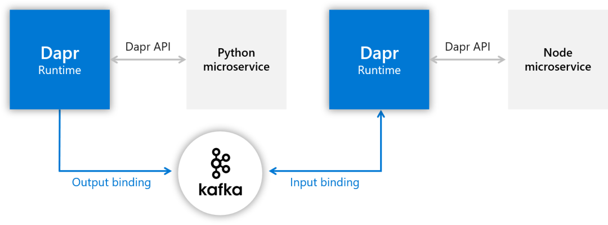
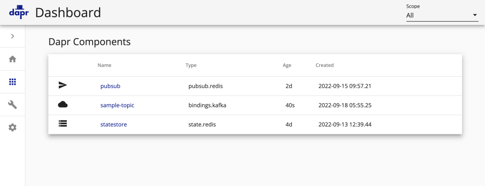

3 Dapr 入门教程之消息队列
前面我们了解了 Dapr 对发布订阅的支持，本节我们将来介绍了 Dapr 中对消息队列的支持。
消息队列，分为两种绑定，一种是输出绑定，一种是输入绑定。出和入是看数据的流向，输出绑定就是作为生产者的服务把消息通过 Dapr 传给消息队列，输入绑定就是作为消费者的服务通过 Dapr 从消息队列里得到消息。
这里的消息队列和发布订阅里的消息总线有什么区别呢？
- 一个消息进入消息总线的话，所有订阅者都能得到这个消息，而一个消息进入消息队列的话，由消费者来取，一次只有一个人能得到。
- 此外，消息总线是不要求处理顺序的，两个消息进入消息总线，谁先被拿到顺序是不一定的，而消息队列可以保证是先入先出的。
本节我们将创建两个微服务，一个具有输入绑定，另一个具有输出绑定，前面我们都使用的 Redis 这种中间件，这里我们将绑定到 Kafka
- Node.js 微服务使用输入绑定
- Python 微服务利用输出绑定
绑定连接到 Kafka，允许我们将消息推送到 Kafka 实例（从 Python 微服务）中，并从该实例（从 Node.js 微服务）接收消息，而不必知道实例的位置。相反，同样只需要直接使用 Dapr API 通过 sidecars 连接即可。
本地运行
首先我们在本地来运行示例应用，对应的架构图如下所示：

同样使用 quickstarts 这个代码仓库：
git clone [-b <dapr_version_tag>] https://github.com/dapr/quickstarts.git
由于我们这里是使用 Kafka 来做消息队列的中间件，所以我们首先需要在本地环境运行 Kafka，我们可以直接使用 https://github.com/wurstmeister/kafka-docker 这个项目以 Docker 方式运行。
定位到 quickstarts 的 tutorials/bindings 目录，下面有一个 docker-compose-single-kafka.yml 文件：
$ cd tutorials/bindings
$ cat docker-compose-single-kafka.yml
version: '2'
services:
zookeeper:
image: ghcr.io/dapr/3rdparty/zookeeper:latest
ports:
- "2181:2181"
kafka:
image: ghcr.io/dapr/3rdparty/kafka:latest
ports:
- "9092:9092"
environment:
KAFKA_ADVERTISED_HOST_NAME: 127.0.0.1
KAFKA_CREATE_TOPICS: "sample:1:1"
KAFKA_ZOOKEEPER_CONNECT: zookeeper:2181
我们可以直接而使用 docker-compose 来启动一个单实例的 Kafka：
$ docker-compose -f ./docker-compose-single-kafka.yml up -d
隔一段时间镜像拉取完成后以容器方式启动 Kafka：
$ docker-compose -f ./docker-compose-single-kafka.yml ps
NAME COMMAND SERVICE STATUS PORTS
bindings-kafka-1 "start-kafka.sh" kafka running 0.0.0.0:9092->9092/tcp
bindings-zookeeper-1 "/bin/sh -c '/usr/sb…" zookeeper running
在本地运行了 Kafka 后，接着我们可以运行输入绑定的 Node.js 微服务：
$ cd nodeapp
同样先安装服务依赖：
$ npm install # 或者执行 yarn 命令
然后我们就可以使用 dapr run 命令来启动该微服务了，启动方式我们应该比较熟悉了，如下所示：
$ dapr run --app-id bindings-nodeapp --app-port 3000 node app.js --components-path ../components
上面的命令和前面有点不一样的地方是多了一个 --components-path 用来指定组件路径，这是因为现在我们要使用 Kafka 这种中间件来作为我们的消息队列组件，那么我们就需要告诉 Dapr，在 ./components 目录下面就包含一个对应的 kafka_bindings.yaml 文件，内容如下所示：
apiVersion: dapr.io/v1alpha1
kind: Component
metadata:
name: sample-topic
spec:
type: bindings.kafka
version: v1
metadata:
# Kafka broker connection setting
- name: brokers
value: localhost:9092
# consumer configuration: topic and consumer group
- name: topics
value: sample
- name: consumerGroup
value: group1
# publisher configuration: topic
- name: publishTopic
value: sample
- name: authRequired
value: "false"
前面在本地模式下面我们没有主动声明组件，是因为我们使用的就是默认的 Redis，而 Kafka 并不是内置就有的，所以需要我们主动声明，注意上面组件的类型为 type: bindings.kafka，metadata 下面是访问 Kafka 相关的元数据。正常情况下上面的启动命令会输出如下所示的日志信息：~
ℹ️ Starting Dapr with id bindings-nodeapp. HTTP Port: 54215. gRPC Port: 54216
INFO[0000] starting Dapr Runtime -- version 1.8.4 -- commit 18575823c74318c811d6cd6f57ffac76d5debe93 app_id=bindings-nodeapp instance=MBP2022.local scope=dapr.runtime type=log ver=1.8.4
# ......
INFO[0000] dapr initialized. Status: Running. Init Elapsed 347.136ms app_id=bindings-nodeapp instance=MBP2022.local scope=dapr.runtime type=log ver=1.8.4
ℹ️ Updating metadata for app command: node app.js
✅ You're up and running! Both Dapr and your app logs will appear here.
INFO[0001] placement tables updated, version: 0 app_id=bindings-nodeapp instance=MBP2022.local scope=dapr.runtime.actor.internal.placement type=log ver=1.8.4
接下来，需要运行输出绑定的 Python 微服务，定位到 pythonapp 目录，安装 requests 依赖：
$ cd pythonapp
$ pip3 install requests
然后同样用 dapr run 命令来启动该微服务，也要注意带上后面的 --components-path 参数：
$ dapr run --app-id bindings-pythonapp python3 app.py --components-path ../components
ℹ️ Starting Dapr with id bindings-pythonapp. HTTP Port: 54554. gRPC Port: 54555
ℹ️ Checking if Dapr sidecar is listening on HTTP port 54554
INFO[0000] starting Dapr Runtime -- version 1.8.4 -- commit 18575823c74318c811d6cd6f57ffac76d5debe93 app_id=bindings-pythonapp instance=MBP2022.local scope=dapr.runtime type=log ver=1.8.4
# ......
ℹ️ Checking if Dapr sidecar is listening on GRPC port 54555
ℹ️ Dapr sidecar is up and running.
ℹ️ Updating metadata for app command: python3 app.py
✅ You're up and running! Both Dapr and your app logs will appear here.
启动完成后，观察 Python 服务的日志，可以看到不断输出如下所示成功输出绑定到 Kafka 的日志：
== APP == {'data': {'orderId': 1}, 'operation': 'create'}
== APP == <Response [204]>
== APP == {'data': {'orderId': 2}, 'operation': 'create'}
== APP == <Response [204]>
== APP == {'data': {'orderId': 3}, 'operation': 'create'}
== APP == <Response [204]>
# ......
同样这个时候 Node.js 微服务中也不断有新的日志数据产生：
== APP == <Response [204]>
== APP == {'data': {'orderId': 1}, 'operation': 'create'}
== APP == <Response [204]>
== APP == {'data': {'orderId': 2}, 'operation': 'create'}
== APP == <Response [204]>
== APP == {'data': {'orderId': 3}, 'operation': 'create'}
== APP == <Response [204]>
# ......
这是因为 Python 微服务每隔 1s 就会向我们绑定的消息队列发送一条消息，而 Node.js 微服务作为消费者当然会接收到对应的消息数据。
在 Kubernetes 中运行
上面在本地环境下可以正常运行 Dapr bindings 服务，接下来我们再次将该示例部署到 Kubernetes 集群中来进行观察。
同样首先需要提供一个可用的 Kafka 实例，这里我们仍然使用 Helm Chart 方式来进行安装：
$ helm repo add bitnami https://charts.bitnami.com/bitnami
$ helm repo update
然后使用如下所示的命令来安装 Kafka：
$ helm upgrade --install dapr-kafka bitnami/kafka --wait --namespace kafka -f ./kafka-non-persistence.yaml --create-namespace
这里我们指定了一个无需持久化数据（仅供测试）的 values 文件 kafka-non-persistence.yaml，内容如下所示：
replicas: 1
# Disable persistent storage
persistence:
enabled: false
zookeeper:
persistence:
enabled: false
affinity:
nodeAffinity:
requiredDuringSchedulingIgnoredDuringExecution:
nodeSelectorTerms:
- matchExpressions:
- key: kubernetes.io/os
operator: In
values:
- linux
- key: kubernetes.io/arch
operator: In
values:
- amd64
autoCreateTopicsEnable: true
affinity:
nodeAffinity:
requiredDuringSchedulingIgnoredDuringExecution:
nodeSelectorTerms:
- matchExpressions:
- key: kubernetes.io/os
operator: In
values:
- linux
- key: kubernetes.io/arch
operator: In
values:
- amd64
安装完成后可以查看 Pod 的状态来保证 Kafka 启动成功：
$ kubectl -n kafka get pods -w
NAME READY STATUS RESTARTS AGE
dapr-kafka-0 1/1 Running 0 2m7s
dapr-kafka-zookeeper-0 1/1 Running 0 2m57s
接下来我们首先需要在 Kubernetes 集群中配置使用 Kafka 作为 Binding 消息中间件的 Component 组件：
# kafka_bindings.yaml
apiVersion: dapr.io/v1alpha1
kind: Component
metadata:
name: sample-topic
spec:
type: bindings.kafka
version: v1
metadata:
# Kafka broker connection setting
- name: brokers
value: dapr-kafka.kafka:9092
# consumer configuration: topic and consumer group
- name: topics
value: sample
- name: consumerGroup
value: group1
# publisher configuration: topic
- name: publishTopic
value: sample
- name: authRequired
value: "false"
注意该对象上面指定的组件类型为 bindings.kafka，metadata 下面的元信息包括 Kafka brokers 地址、生产者和消费者的配置等等，直接应用上面的资源清单即可：
$ kubectl apply -f kafka_bindings.yaml
$ kubectl get components sample-topic
NAME AGE
sample-topic 13s
创建完成后在 Dapr Dashboard 中也可以看到对应的组件信息：

接着部署两个 Node.js 和 Python 微服务即可：
$ kubectl apply -f deploy/node.yaml
service/bindings-nodeapp created
deployment.apps/bindings-nodeapp created
$ kubectl apply -f deploy/python.yaml
deployment.apps/bindings-pythonapp created
$ kubectl get pods
NAME READY STATUS RESTARTS AGE
bindings-nodeapp-8bcdd744d-pj2j7 2/2 Running 0 3m44s
bindings-pythonapp-7b7fcc579b-kqx6p 2/2 Running 0 3m39s
部署完成后可以同样分别观察 Node.js 和 Python 微服务的日志：
$ kubectl logs --selector app=bindingspythonapp -c python --tail=-1
{'data': {'orderId': 1}, 'operation': 'create'}
HTTPConnectionPool(host='localhost', port=3500): Max retries exceeded with url: /v1.0/bindings/sample-topic (Caused by NewConnectionError('<urllib3.connection.HTTPConnection object at 0x7f9e75181390>: Failed to establish a new connection: [Errno 111] Connection refused'))
{'data': {'orderId': 2}, 'operation': 'create'}
<Response [204]>
{'data': {'orderId': 3}, 'operation': 'create'}
<Response [204]>
# ......
$ kubectl logs --selector app=bindingsnodeapp -c node --tail=-1
Node App listening on port 3000!
Hello from Kafka!
{ orderId: 2 }
Hello from Kafka!
{ orderId: 3 }
# ......
可以看到两个微服务的日志也服务我们的预期的。
如何工作
前面我们在本地或 Kubernetes 中都运行了示例应用，而且没有更改任何代码，应用结果都符合预期，接下来我们看看这是如何工作的。
在查看应用程序代码之前，我们先看看 Kafka 绑定组件的资源清单文件，它们为 Kafka 连接指定 brokers，为消费者指定 topics 和 consumerGroup，为生产者指定了 publishTopic。
我们创建了名为 sample-topic 的组件，然后我们通过该组件配置的 Kafka 中的 sample 主题来设置输入和输出绑定。
apiVersion: dapr.io/v1alpha1
kind: Component
metadata:
name: sample-topic
spec:
type: bindings.kafka
version: v1
metadata:
# Kafka broker connection setting
- name: brokers
value: [kafka broker address]
# consumer configuration: topic and consumer group
- name: topics
value: sample
- name: consumerGroup
value: group1
# publisher configuration: topic
- name: publishTopic
value: sample
- name: authRequired
value: "false"
现在我们先导航到 nodeapp 目录下面打开 app.js 文件，这是 Node.js 输入绑定示例应用的代码。这里使用 Express 暴露了一个 API 端点，需要注意的是 API 名称必须与在 Kafka 绑定组件中声明的组件名称相同，然后 Dapr 运行时将使用来自 sample 主题的事件，然后将 POST 请求与事件负载一起发送给 Node 应用程序。
const express = require("express");
const bodyParser = require("body-parser");
const port = process.env.APP_PORT ?? "3000";
require("isomorphic-fetch");
const app = express();
app.use(bodyParser.json());
// 这里的 api 端点需要与声明的组件名称相同
app.post("/sample-topic", (req, res) => {
console.log("Hello from Kafka!");
console.log(req.body);
res.status(200).send();
});
app.listen(port, () => console.log(`Node App listening on port ${port}!`));
所以当 Kafka 中收到消息后就会打印类似如下所示的日志：
Hello from Kafka!
{ orderId: 3 }
然后我们导航到 pythonapp 目录下面打开 app.py 文件，这是输出绑定示例（生产者）应用程序的代码，该服务会每秒发送一次 POST 请求到 Dapr 的 http 端点的 http://localhost:3500/v1.0/bindings/<output_bindings_name>，并带有事件的 payload 数据。
这个应用程序使用 bindings 组件名 sample-topic 作为 <output_bindings_name>，然后 Dapr 运行时将事件发送到上面的 Kafka 绑定组件中指定的 sample 主题上去。
import time
import requests
import os
dapr_port = os.getenv("DAPR_HTTP_PORT", 3500)
dapr_url = "http://localhost:{}/v1.0/bindings/sample-topic".format(dapr_port)
n = 0
while True:
n += 1
payload = { "data": {"orderId": n}, "operation": "create" }
print(payload, flush=True)
try:
response = requests.post(dapr_url, json=payload)
print(response, flush=True)
except Exception as e:
print(e, flush=True)
time.sleep(1)
上面代码中最重要的依然是 Dapr API 地址 dapr_url 的拼接 "http://localhost:{}/v1.0/bindings/sample-topic".format(dapr_port)，注意我们依然是面向 localhost 编程，而 v1.0/bindings/<output_bindings_name> 端点则是 Dapr API 为我们封装的输出消息绑定的统一接口，非常简单方便。